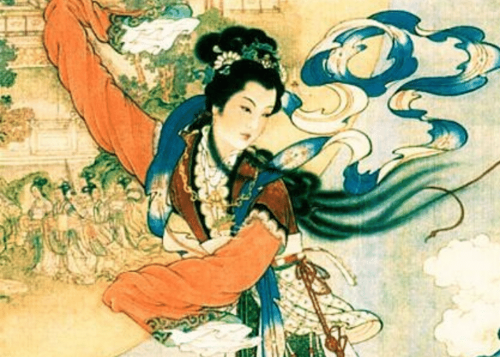
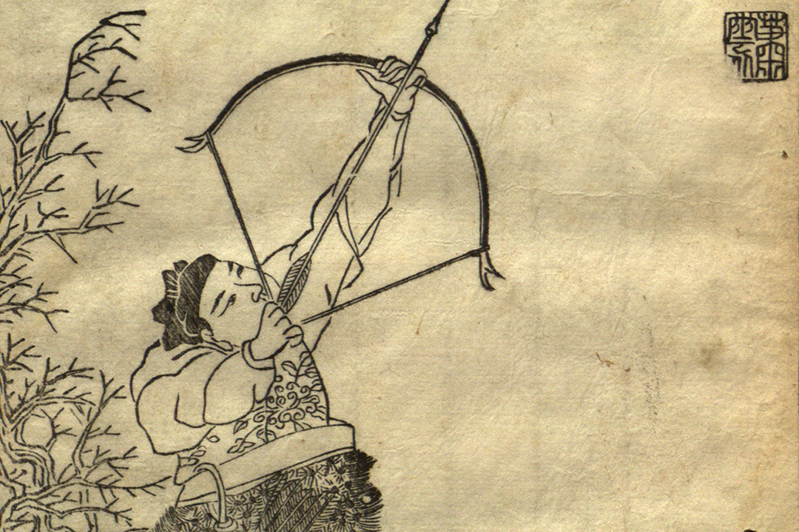

O legendă despre dragoste, sacrificiu și nemurire
| Chang'e | |
|---|---|
|
 |
|
| Nume chinez | 嫦娥 (Cháng'é) |
| Specie | Divinitate |
| Rol | Zeița Lunii |
| Loc | Lună |
| Caracteristici | |
| Abilități | Nemurire, grație divină |
| Simboluri | Luna, Iepurele de Jad |
| Simbolism | Dragoste, sacrificiu |
| Hou Yi | |
|---|---|
|
 |
|
| Nume chinez | 后羿 (Hòu Yì) |
| Specie | Om |
| Rol | Erou legendar |
| Caracteristici | |
| Abilități | Arcaș legendar |
| Armă | Arc magic |
| Realizări | Doborârea celor nouă sori |
| Simbolism | Curaj, sacrificiu |
Legenda lui Chang'e și Hou Yi este una dintre cele mai cunoscute povești din mitologia chineză, ilustrând teme universale precum iubirea, sacrificiul și dorința de nemurire.
Într-o epocă îndepărtată, zece sori ardeau pe cer, distrugând pământul cu căldura lor. Eroul Hou Yi a salvat omenirea doborând nouă dintre ei cu arcul său magic, lăsând un singur soare pentru a susține viața.
Ca recompensă, Hou Yi a primit elixirul nemuririi. Totuși, din iubire pentru soția sa, Chang'e, a ales să nu îl consume imediat.
Deși Hou Yi ar fi putut deveni nemuritor, iubirea sa pentru soția sa, frumoasa Chang'e, a fost mai puternică. El a decis să păstreze licoarea, ascunzând-o pentru un moment potrivit când ar fi putut-o împărți cu ea. Însă, un discipol lacom al lui Hou Yi a aflat despre licoare și a încercat să o fure. Într-un moment de disperare și pentru a împiedica licoarea să cadă în mâini greșite, Chang'e a băut-o, devenind astfel nemuritoare și înălțându-se la Lună, unde a fost nevoită să trăiască singură.
Deși despărțită de Hou Yi, dragostea lor a rămas vie și a fost comemorată în fiecare an prin Festivalul de la Mijlocul Toamnei. În această noapte specială, oamenii privesc Luna plină, admirând frumusețea ei și amintindu-și de sacrificiul lui Chang'e. Se spune că, în timpul acestui festival, Chang'e poate fi văzută dansând pe Lună, însoțită de Iepurele de Jad, care amestecă elixirul nemuririi. Oamenii fac prăjituri de lună, cântă cântece tradiționale și își exprimă dorințele pentru reunirea celor dragi, reflectând eterna poveste de dragoste a celor doi îndrăgostiți.
Chang'e și Hou Yi sunt mai mult decât personaje mitologice; ei sunt simboluri ale devotamentului și sacrificiului suprem. Povestea lor a fost transmisă de-a lungul generațiilor prin poezii, opere de artă și festivaluri, continuând să inspire și să emoționeze oamenii. Reprezentând dorința de nemurire și prețul pe care suntem dispuși să-l plătim pentru iubire, legenda lui Chang'e și Hou Yi ne amintește de fragilitatea și frumusețea vieții umane. Această poveste rămâne o parte esențială a culturii chineze, oferind lecții valoroase despre curaj, sacrificiu și speranță.
Site făcut de
Ursulescu Florin-Alexandru, cl. XII-a A, Liceul Atanasie Marienescu